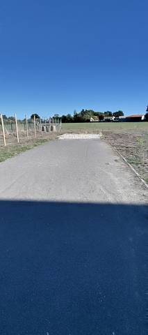
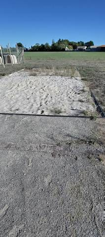

{kind=link}
{kind=link}
Il n'y a littéralement pas de piste d'athlétisme ici. En revanche il y a bel et bien un sautoir en longueur, avec son aire d'élan : aucun doute là-dessus. Maintenant, en toute franchise, je ne vois pas comment on pourrait s'y entraîner sérieusement. C'est tout proche d'une aire de jeux pour enfants, et au bout on se retrouve un peu perdu au milieu des champs. Je vois mal qui voudrait venir s'entraîner là, surtout que l'aire d'élan, c'est du gravier. L'installation a au moins le mérite d'exister, et elle est publique et ouverte en continu : allez, 1 sur 5.
Espace Yannick Noah
Rue de la Roussière, 44310 Saint-Colomban · Loire-Atlantique
Espace Yannick Noah is an athletics venue in Saint-Colomban (Loire-Atlantique), Pays de la Loire, France. It also offers long jump pit. The venue provides changing rooms and showers. Access is free and unrestricted.
Photos


A photo is surely still missing
Jump pits and throwing areas are what public data describes worst, and what gets photographed least. A close-up of the ground, a covered vault pit, a sand box gone to weeds: each adds what no field carries.
Send a photoNo GitHub account?Venue
- Opened
- 2012
Recorded facilities
- Long jump pit
Access & amenities
- Free access
- Yes
- Floodlighting
- No
- Changing rooms
- Yes
- Showers
- Yes
- Toilets
- Yes
Visite du 3 septembre 2026, vers 18 h. Le sautoir est en accès libre et ouvert en continu : ni clôture, ni portail, ni barrière autour de l'aire d'élan, on y entre depuis l'aire de jeux voisine ou depuis le pré. Aucun panneau d'horaires, de règlement ni de créneaux réservés n'a été vu sur place. Les vestiaires, douches et sanitaires portés sur cette fiche viennent du recensement du ministère et concernent le bâtiment de l'Espace Yannick Noah ; ils n'ont pas été vérifiés pendant la visite, et rien ne dit à quelles heures ils sont ouverts.
Athlete reviews
Il n'y a pas de piste d'athlétisme sur ce site. Le recensement du ministère y déclare une « piste isolée » en cendrée : la visite du 3 septembre 2026 n'a trouvé aucun anneau, aucune ligne droite de course, aucun couloir tracé. Ce que le recensement compte comme piste est l'aire d'élan du sautoir en longueur, et rien d'autre. OpenStreetMap dit la même chose sans le dire. Le tracé way/1037116891, tagué leisure=track et sport=athletics (posé le 4 mai 2023), est un rectangle de 85,8 m sur 4,7 m : ce sont les dimensions d'une aire d'élan, pas d'un anneau. Le champ « piste » passe donc à faux. La cendrée déclarée par le ministère décrit bien ce qu'on foule ici — un stabilisé gravillonné —, mais c'est le revêtement de l'élan, pas celui d'une piste. Ce qui existe, en revanche, ne fait aucun doute : un sautoir en longueur complet, avec son aire d'élan rectiligne d'environ 85 m, une planche d'appel en bois sombre au ras du sol, et un bac à sable bordé d'une lisse. C'est le seul agrès du site : ni hauteur, ni perche, ni aire de lancer, ni rivière de steeple n'ont été vues le 3 septembre 2026. L'état se lit sur les photos. L'aire d'élan est en gravier compacté, pas en revêtement d'athlétisme : elle est roulante, irrégulière, et l'herbe repousse sur ses bords. Le sable du bac est tassé, creusé d'empreintes anciennes, et des touffes d'herbe y ont poussé — il n'a pas été ratissé récemment. La planche d'appel, elle, est en place et lisible. Le contexte compte autant que l'équipement : le sautoir jouxte une aire de jeux pour enfants, dont il n'est séparé que par un grillage, et son extrémité donne sur des prés. Il est à l'écart du bâtiment de l'Espace Yannick Noah, qui abrite le basket, la danse et le badminton (OpenStreetMap, way/384864800). Qui cherche un tour de piste au sud de Nantes ne le trouvera pas ici.
Other venues in the department
- Complexe Sportif
- Complexe sportif des Grenais
- Stade Muriel Hurtis — Complexe des Chevrets
- Gymnase du Moulin Bleu
- Stade Municipal
- Piste de La Chevrolière
Report an error or complete this record
Réf. I441550005 · Source: Data ES + community — Data ES, French ministry for sport, Licence Ouverte 2.0. Records are self-declared and may be incomplete: check access conditions before travelling.